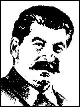

and
In THE PRESIDIUM of the Executive Committee of the
Delivered in the AMERICAN COMMISSION of the Presidium of
the Executive Committee of the Communist International,
May 6, 1929
Communist International on the American Question,
May 14th, 1929

[ No Date -- Early 1970s]
PROLETARIAN PUBLISHERS
San Francisco
FOREWORD
Proletarian Publishers has printed Stalin's three speeches on the American Communist Party in order to accomplish two tasks. The first is to dispel the myth that the CPUSA was ever a bolshevik party in the tradition of Lenin and Stalin. Such views are now being advanced together with the idea that William Z. Foster was a great Marxist-Leninist in order to divert Marxist-Leninists in this country from the historic task of building a true, multinational Marxist-Leninist Communist Party in this country. We do not need a new version of the old CPUSA but a party in the tradition of Lenin and Stalin.
The second is to expose the evils of factionalism and American Exceptionalism. These were rife in the CPUSA in 1929 just as they are today. No party can survive such deviations without the most ruthless struggle to expose and correct such errors.
The pamphlet was originally published by the Central Committee of the CPUSA which is also responsible for the Preface. This was written after the expulsion of Lovestone and we include it to give the reader the attitude of the party at the time. As always this is a reprint of the original pamphlet. Damage over the years has forced us to retypeset some parts but the broken type and crooked layout are in the original.
page 4
|
|
5 | |
|
Speech Delivered in the American Commission of the
First Speech Delivered in the Presidium of the E.C.C.I.
Second Speech Delivered at the Presidium of the |
11 21 36 | |
page 5
The speeches of Comrade Stalin in the American Commission and at the meeting of the Presidium of the Executive Committee of the Communist International, published herewith, have not only historical but also present political importance. At once they show the line of the Sixth Congress in action and the application to the Communist Party of the United States, of the Sixth Congress decisions on the fight against the Right danger.
The Sixth Congress of the C.I. pointed out the growth of the Right wing tendencies in the world Communist movement, the growth caused by new features in the world situation -- further decay of capitalist stabilization, sharpening of inner and outer contradictions of capitalism, sharpening of the class struggle and the radicalization of the working class. In the United States these new features of the world situation signified the deeper entanglement of American capitalism in the general crisis of world capitalism, the more rapid growth of class contradictions, and the sharpening of the struggle of the American workers against the united front of capitalists, their state apparatus and their reformist lackeys. In this situation Right wing opportunists in the American Party developed only reformist conceptions on all important questions of the Communist movement. The most "famous" of these opportunistic conceptions were Pepper and Lovestone's theory of American exceptionalism, their opportunistic presentation of the question of the inner contradictions of American capitalism, their underestimation of the degree of the radicalization of the workers, and finally, their covering of the Right danger under the theory that the only Right danger was Trotzkyism and that it was not necessary to fight against opportunistic tendencies and theories openly formulated by Right wingers who at that time determined the political line of the American Party.
The speeches of Comrade Stalin show very clearly how
page 6
the fight against Right wingers in America was part and parcel of the beneficent process of cleansing the sections of the Communist International of opportunist and wavering elements. Comrade Stalin showed how this cleansing was a tactical conclusion dictated by the whole analysis of the world situation.
"There are many who think that nothing has changed in the international situation of late, that everything has remained as of old. This is not true, comrades. The fact of the matter is that we have an accentuation of the class struggle in all capitalist countries, a growing revolutionary crisis in Europe, growing conditions of a new revolutionary upward swing. . . . Soon the ground will be too hot for world capitalism.
The political roots of opportunist errors and theories, which flourished in the American Party, are clearly analyzed and exposed in Comrade Stalin's speeches. At the beginning of his first speech he says that both groups in the American Party, that the majority and minority, "are guilty of the fundamental error of exaggerating the specific features of American capitalism." This general ground of all opportunist mistakes in the American Party as shown by Comrade Stalin a year ago, has been proved by the subsequent political evolution of the counter-revolutionary Lovestone group, as well as by the newest manifestations of opportunistic tendencies inside the American Party.
It would be sufficient to cite Lovestone's conception of the economic crisis in the United States as a mere stock exchange crash and his continued panegyrics, worthy of a
page 7
backward shopkeeper, before the power and strength of American capitalism, even while it is in an orgy of economic crisis which shakes its very foundation, in order to show the necessity for Stalin's analysis. It would be sufficient to point out the underestimation, which still exists in the Party, of the depth, duration and political significance of the present economic crisis as well as the underestimation of the radicalization of the workers, which results in our lagging behind the masses in economic struggles, in the organization of the unemployed, and in the preparation for May Day, in order to understand the present importance of Stalin's analysis of the Right tendencies in the American Party, of the very clearly formulated distinction between specific particularities of American capitalism which the Communist Party must take into account in its work and the general features of capitalism, which are common to all countries, which are the basis of all our activity and the very foundation of internationalism. This distinction, which is the dividing line between Communists and opportunists must be learned by every member of the Party and really applied in all our everyday work.
The particular features of opportunism in the American Party were the seal of unprincipledness and sharply developed factionalism. Naturally the fight of the Communist International against opportunism in the American Party must have been directed against this particular expression of American opportunism. The political blows of Comrade Stalin's speeches were directed against unprincipled factionalism of both factions in the American Party -- the former majority and minority groups. One of the most revolting features of this unprincipled factionalism was the speculation on the divergencies in the Communist Party of the Soviet Union, and in this respect Comrade Stalin mercilessly unmasked pretensions of the former minority to be "Stalinites" in the United States as well as Lovestone's stock exchange speculation at the Sixth Party Convention on the Bukharin question.
Blinded by factionalism, both factions not only did not see or did not show to the Party the opportunist mis-
page 8
takes of their "own" groups, but failed to find an escape from the years long factional strife which disarmed the American Party in the face of the class enemies and compromised the Party in the eyes of the American workers. Comrade Stalin shows how the minority saw only one solution -- to give the leadership of the Party to the minority faction. And the majority faction, headed by Lovestone, demanded only the whitewashing of majority leaders of all opportunistic mistakes and the strangling of the minority. The solution given by the Comintern, as laid down in Comrade Stalin's speeches, was: a merciless fight against the opportunistic mistakes of both groups, decisive organizational measures to stop once for all the factional fight in the American Party, and the unification of the Party, not on the platform of the majority or of the minority, but on the basis of the C.I. line.
Perhaps the most striking part of Comrade Stalin's speeches is his analysis of factionalism in a Communist Party. With clear and simple words, with formulations sharp as a razor, Comrade Stalin opens this "running sore" of factionalism in a Communist Party and, in a way understandable to every worker, shows the necessity of putting an end to the crime of factionalism.
Many political prognoses made by Comrade Stalin in May a year ago, now appear as fulfilled predictions. His analysis of the crisis of world capitalism which develops with quick tempo and which must involve American capitalism, and his statement that the 3,000,000 of unemployed were but the first swallows of the crisis maturing in America; all these prognoses were not mere guesses, but inevitable conclusions drawn from a Marxian analysis of the whole world situation.
With the same historical accuracy, Comrade Stalin's prognosis of the future fate of the Lovestone group has been fulfilled. Answering Lovestone's pretentions that he was defending his opportunistic conceptions and factional activities "in the name of 99 per cent of the American Communist Party," Comrade Stalin pointed out that Lovestone "is indisputably an adroit and talented factional wire puller" and had a majority in the American Communist
page 9
Party, mainly because the membership regarded the leaders of the majority "as the determined supporters of the Communist International."
To the gloomy predictions of Lovestone and Gitlow, that the Comintern Address will destroy the American Party, Comrade Stalin answered:
"No comrades, the American Communist Party, will not perish. It will live and flourish to the dismay of the enemies of the working class. Only one small factional group will perish if it continues to be stubborn, if it does not submit to the will of the Comintern, if it continues to adhere to its errors."
These words could be written upon the political grave, or better said, on the Brandlerite political sewer in which now rests Lovestone, Gitlow & Co.
Still timely are the tasks of the American Communist movement laid down by Comrade Stalin in his speeches: bolshevization of the American Party, forging of real revolutionary cadres and of real revolutionary leaders of the proletariat, strengthening of the fight against reformism and social-democracy, and preparing the working class and the exploited masses for the new revolutionary fights.
Comrade Stalin pointed out that the importance of the Comintern Address consisted precisely in that it helps the American Party "to put an end to unprincipled factionalism, create unity in the Party, and finally enter on the broad road of mass political work." The American Communist Party after a year of work and struggle can now say that this general task has been entirely accomplished. The Party has mercilessly eliminated factionalism and is now united on the line of the Comintern in the fight against all and every opportunist tendency and is already on the road to mass political activity. The organizational successes of the Party, and the tremendous growth of the Party's political influence among the American workers are results of the Marxist-Leninist help of the Communist International.
The renegades of Communism, from Lovestone's or Cannon's camp, may sneer at Stalin's words about the er-
page 10
rors and mistakes of the Party which were brought forward in Stalin's speeches. The Trotskyites' "Militant" has already come out with a lengthy and "deep" article declaring that the publication of Comrade Stalin's speeches "obviously has some very special -- one may say, occult meaning," is "some machination behind the scenes" and a new informal intrigue against some American comrades, and in particular "a first step toward overthrowing Foster." These political gossipers are unable to see in any stage of Party bolshevization anything but personal intrigue. Because Comrade Foster, one of the present most authoritative leaders of the united American Party, was mentioned in Stalin's speech as at that time the leader of the former minority group in connection with errors and factionalism of the former minority, the counter-revolutionary slanderers of the "Militant" hasten to build upon this the bedroom story of new "intrigues" in the Communist Party. To them could be very well applied the angry words of Karl Marx, who, in his "A Criticism of the Hegelian Philosophy of Right," branded the representatives of the German historical judicial school: "To them history only shows itself 'a posteriori' like the God of Israel to Moses." Similar interpretation of history is however, a particular feature of the Trotskyites. Their Pope, their heir of Marx and Lenin on Earth -- Trotsky, in his recent book fully developed this conception of the whole history of the Russian revolutionary movement; the history of two Russian revolutions, as a dim reflection of his own brilliant personal genius and the whole history of the development of the Russian Party after the defeat of Trotskyism as the result of an infernal intrigue, "conspiracy of epigones."
Strong with bolshevik self-criticism, boldly exposing, criticizing, and correcting the past and present errors, the American Party will follow the path of bolshevization enlightened by Stalin's speeches, and will be worthy of Stalin's definition of our Party as "one of the few Communist Parties in the world upon which history has laid tasks of a decisive character from the point of view of the world revolutionary movement."
page 11
Comrades, since quite a few speeches have been delivered here and the political position of both groups in the Communist Party of the United States of America has been sufficiently clarified, I do not intend to speak at great length. I shall not deal with the political position of the leaders of the majority and the minority. I shall not do so since it has become evident during the course of the discussion that both groups are guilty of the fundamental error of exaggerating the specific features of American capitalism. You know that this exaggeration lies at the root of every opportunist error committed both by the majority and the minority group. It would be wrong to ignore the specific peculiarities of American capitalism. The Communist Party in its work must take them into account. But it would be still more wrong to base the activities of the Communist Party on these specific features, since the foundation of the activities of every Communist Party, including the American Communist Party, on which it must base itself, must be the general features of capitalism, which are the same for all countries, and not its specific features in any given country. It is on this that the internationalism of the Communist Party is founded. Specific features are only supplementary to the general features. The error of both groups is that they exaggerate the significance of the specific features of American capitalism and thereby overlook the basic features of American capitalism which are characteristic of world capitalism as a whole. Therefore, when the leaders of the majority and the minority accuse each other of elements of a Right deviation, it is obviously not without some measure of truth. It cannot be denied that American conditions form a
page 12
medium in which it is easy for the American Communist Party to be led astray and to exaggerate the strength and stability of American capitalism. These conditions lead our comrades from America, both the majority and the minority, into errors of the type of the Right deviation. Owing to these conditions, at times one section, at others, the other section, fails to realize the full extent of reformism in America, underestimates the leftward swing of the working class, and, in genera!, is inclined to regard American capitalism as something apart from and above world capitalism. That is the basis for the unsteadiness of both sections of the American Communist Party in matters of principle.
Having made these general observations, let us now pass to practical political questions.
What are the main defects in the practice of the leaders of the majority and the minority?
Firstly, that in their day-to-day work they, and particularly the leaders of the majority, are guided by motives of unprincipled factionalism and place the interests of their faction higher than the interests of the Party.
Secondly, that both groups, and particularly the majority, are so infected with the disease of factionalism that they base their relations with the Comintern, not on the principle of confidence, but on a policy of rotten diplomacy, a policy of diplomatic intrigue.
Let us take a few examples. I will mention such a simple fact as the speculations made by the leaders both of the majority and the minority regarding the differences within the Communist Party of the Soviet Union. You know that both groups of the American Communist Party, competing with each other and chasing after each other like horses in a race, are feverishly speculating on existing and non-existing differences within the C.P.S.U. Why do they do that? Do the interests of the Communist Party of America demand it? No, of course not. They do it in order to gain some advantage for their own particular faction and to cause injury to the other faction. Foster and Bittleman see nothing reprehensible in declaring themselves "Stalin-
page 13
ites" and thereby demonstrating their loyalty to the C.P.S.U. But, my dear comrades, that is disgraceful. Do you not know that there are no "Stalinites," that there must be no "Stalinites"? Why does the minority act in this unseemly fashion? In order to entrap the majority group, the group of Comrade Lovestone, and to prove that the Lovestone group is opposed to the C.P.S.U. and, hence, to the basic nucleus in the Comintern. That is, of course, incorrect. It is irresponsible. But the minority cares nothing about that; their chief aim is to ensnare and discredit the majority in the interests of the faction of the minority.
And how does the Lovestone group act in this connection? Does it behave more correctly than the minority group? Unfortunately, not. Unfortunately, its behavior is even more disgraceful than that of the minority group. Judge for yourselves. The Foster group demonstrate their closeness to the C.P.S.U. by declaring themselves "Stalinites." Lovestone perceives that his own faction thereby may lose something by this. Therefore, in order not to be outdone, the Lovestone group suddenly performs a "hair raising" feat and, at the American Party Congress,* carries through a decision calling for the removal of Comrade Bukharin from the Comintern. And so you get a game of rivalry on the principle of who will outdo whom. Instead of a fight on principles you get the most unprincipled speculation on the differences within the C.P.S.U.
Such are the results of a policy which places the interests of faction higher than the interests of the Party.
Another example. I refer to the case of Comrade Pepper. You are all more or less acquainted with that case. Twice the Comintern demanded Comrade Pepper's return to Moscow. The Central Committee of the American Communist Party resisted and, in fact, ignored a number of decisions of the Executive Committee of the Communist International regarding Pepper. Thereby the majority of the American Communist Party demonstrated its fellowship with Pepper,
page 14
whose opportunist vacillations everybody knows. Finally, a delegation from the Executive Committee of the Communist International sent to the 6th Congress of the American Communist Party, advances again, in the name of the Executive Committee of the Communist International, the immediate recall of Comrade Pepper. The majority under the leadership of Lovestone and Gitlow again resists this demand and does not find it necessary to carry out the decision of the E.C.C.I. Foster's group utilizes this situation against the Lovestone group, stating that the majority group within the American Communist Party is against the Comintern. The Lovestone group finally senses that its interests might suffer should it find itself in a position of opposition to the Comintern. Accordingly, the Lovestone group performs another "hair-raising" feat and expels Comrade Pepper from the Party! the same Pepper whom only the day before they had defended against the C.I. Another game of rivalry -- who can spit furthest. How can we explain the resistance to the decisions of the Comintern regarding Pepper on the part of the majority group? Not, of course, in the interests of the Party. It was exclusively in the interests of the majority faction. Why is it that the majority made a sudden right-about-face and unexpectedly expelled Pepper from the Party? Was it in the interests of the Party? Of course not. It was purely in the interests of the Lovestone faction, who were anxious not to surrender a trump card to their enemy, namely, the Foster-Bittleman factional group. Faction interests above all!
The Foster group want to demonstrate their devotion to the C.P.S.U. by declaring themselves "Stalinites." Very good. We, the Lovestoneites, will go still further than the Foster group and demand the removal of Comrade Bukharin from the Comintern. Let the Fosterites try to beat that! Let them know over there in Moscow that we Americans know how to play the stock market.
The Foster group want to demonstrate their solidarity with the Comintern by demanding the carrying out of the decision of the Comintern regarding Pepper's recall. Very good. We, the Lovestoneites, will go still further and will
page 15
expel Comrade Pepper from the Party. Let the Fosterites try to beat that! Let them know over there in Moscow that we Americans know how to play the stock market.
There you have the fruits of the factionalism of the majority and the minority.
But, Comrades, the Comintern is not a stock market. The Comintern is the holy of holies of the working class. The Comintern, therefore, must not be confused with a stock market. Either we are Leninists, and our relations one with another, as well as the relations of the sections with the Comintern, and vice versa, must be built on mutual confidence, must be as clean and pure as crystal -- in which case there should be no room in our ranks for rotten diplomatic intrigue; or we are not Leninists -- in which case rotten diplomacy and unprincipled factional struggle will have full scope in our relations. One or the other. We must choose, comrades.
In order to show how pure Communist morals are depraved and defiled in the course of a factional struggle, I could cite yet another fact as, for instance, my conversation with Comrades Foster and Lovestone. I refer to the conversation that took place at the time of the Sixth Congress. It is characteristic that in correspondence with his friends Comrade Foster makes this conversation out to be something secret, something which must not be talked about aloud. It is characteristic that Comrade Lovestone, in bringing his charges against Comrade Foster, in connection with this conversation, refers to his talk with me and boasts here that he, Comrade Lovestone, unlike Foster, is able to keep a secret and that under no conditions would he consent to divulge the substance of his conversation with me. Why this mysticism, dear comrades; what purpose does it serve? What could there be mysterious in my talk with Comrades Foster and Lovestone? Listening to these comrades, one might think I spoke to them of things which one would be ashamed to relate here. But that is stupid, comrades. What is the purpose of this mystical game? Is it difficult to understand that I have nothing to conceal from comrades? Is it difficult to understand
page 16
that I am ready at any moment to tell comrades the substance of my conversation with Foster and Lovestone from beginning to end? What will then become of the famous mysticism so zealously spread here by Foster and Lovestone?
What did Comrade Foster talk to me about? He complained of the factionalism and unprincipledness of Comrade Lovestone's group. What did I answer him? I admitted these sins on the part of the Lovestone group, but at the same time added that the same sins were characteristic of the Foster group. On the basis of this Comrade Foster arrives at the singular conclusion that I sympathize with the minority group. Where is the foundation, one asks? On what grounds is Foster pleased to think that I fail to see the defects of the minority group and even sympathize with that group? Is it not obvious that with Comrade Foster the wish is father to the thought?
What did Comrade Lovestone talk about? Of the worthlessness of the Foster-Bittleman group. What did I answer? I answered that both groups were suffering from serious defects and advised him to take measures to liquidate factionalism. That was all.
What is there mysterious here that cannot be spoken about aloud?
Is it not strange that out of these simple and clear facts the comrades of the majority and the minority make a secret worthy of arousing the laughter of serious-minded people? Is it not obvious that there would be no mystification if there were no factional atmosphere poisoning the life of the American Communist Party and defiling simple and pure Communist morals?
Or let us take, for instance, another fact. I refer to the talk with Comrade Lovestone that took place the other day. It is characteristic that Comrade Lovestone has also been spreading absurd rumors about this conversation of mine and making a secret of it. Why this incomprehensible passion for the "mysterious"? . . . What did he speak about to me the other day? He asked that the Presidium of the E.C.C.I. should rescind the decision to withdraw him
page 17
from America. He said that he, Lovestone, would undertake to carry out the proposed decision of the Presidium of the E.C.C.I., provided it would not be directed sharply against the leaders of the majority of the Communist Party of America. He promised to be a loyal soldier of the Comintern and to prove it in practice, if the Comintern would give him the necessary instructions. He said he was not looking for high positions in the American Communist Party, but only begged that he should be tested and given the opportunity to prove his loyalty to the Comintern. What did I reply to this? I told him that experiments in testing the loyalty of Comrade Lovestone to the Comintern have already been going on for three years, but no good has come of them. I said it would be better both for the Communist Party of America and for the Comintern, if Comrades Lovestone and Bittleman were kept in Moscow for a time. I said that this method of action on the part of the Comintern was one of the surest means of curing the American Communist Party of factionalism and saving it from disintegration. I said that although this was my opinion, I agreed to submit the proposal of Comrade Lovestone to the consideration of the Russian comrades, and undertook to inform him of the opinion of the Russian comrades.
That seems perfectly clear. Yet Comrade Lovestone again tries to make a secret of these obvious facts and is spreading all kinds of rumors regarding this conversation.
It is obvious that there would be no such mystification and simple things would not be turned into mysterious legends, if it were not for a policy which places the interests of a faction higher than the interests of the Party, the interests of diplomatic intrigue higher than the interests of the Comintern.
In order to put an end to these foul methods and place the American Communist Party on the lines of Leninist policy, it is necessary first of all to put an end to factionalism in that Party.
That is the conclusion to which the above-mentioned facts bring us. What is the solution?
page 18
Comrade Foster mentioned one. According to his proposal, the leadership should be handed over to the minority. Can that solution be adopted? No, it can not. The delegation of the Executive Committee of the Communist International committed an error when it sharply dissociated itself from the majority, without at the same time dissociating itself equally sharply from the minority. It would be very unfortunate if the Commission of the Presidium repeated the error of the delegation of the E.C.C.I. I think the Commission of the Presidium of the E.C.C.I. should in its draft dissociate itself both from the errors of the majority and from the errors of the minority. And for the very reason that it must dissociate itself from both, it must not propose to turn over the leadership to the minority. Hence the proposal of Comrade Foster with all its implications, automatically falls to the ground.
The American delegation proposed a different solution, directly contrary to the proposal of Comrade Foster. As you know, the proposal of the American delegation consists of ten points. The substance of this proposal is to the effect that the leadership of the majority should be fully rehabilitated, the factional work of the majority should be considered correct, that the decision of the Presidium of the E.C.C.I. to withdraw Comrade Lovestone should be annulled, and that thus the practice of suffocating the minority should be endorsed. Can this solution be adopted? No, it can not, for it would mean, not eradicating factionalism, but elevating it to a principle.
What then is the solution?
The solution consists in the following:
1. The actions and the proposals of the delegation of the E.C.C.I. must, in the main, be approved, with the exclusion from the proposals of those points which approximate to the proposals of Comrade Foster.
2. An open letter must be sent in the name of the E.C.C.I. to the members of the American Communist Party setting forth the errors of both sections of the Party and
page 19
sharply emphasizing the question of eradicating all factionalism.
3. The action of the leaders of the majority at the Convention of the Communist Party of America, particularly on the question of Pepper, must be condemned.
4. An end must be put to the present situation in the Communist Party of America, in which the questions of positive work, the questions of the struggle of the working class against the capitalists, questions of wages, working hours, work in the trade unions, the fight against reformism, the fight against the Right deviation -- when all these questions are kept in the shade, and are replaced by petty questions of the factional struggle between the Lovestone group and the Foster group.
5. The Secretariat of the Executive Committee of the American Communist Party must be reorganized with the inclusion of such workers therein as are capable of seeing something more than the factional struggle, the struggle of the working class against the capitalists, who are capable of placing the interests and the unity of the Party above the interests of individual groups and their leaders.
6. Comrades Lovestone and Bittleman must be summoned and placed at the disposal of the Comintern, in order that the members of the American Communist Party should at last understand that the Comintern intends to fight factionalism in all seriousness.
Such is the solution, in my opinion.
A word or two regarding the tasks and the mission of the American Communist Party. I think, comrades, that the American Communist Party is one of those few Communist Parties in the world upon which history has laid tasks of a decisive character from the point of view of the world revolutionary movement. You all know very well the strength and power of American capitalism. Many now think that the general crisis of world capitalism will not affect America. That, of course, is not true. It is entirely untrue, comrades. The crisis of world capitalism is developing with increasing rapidity and cannot but affect
page 20
American capitalism. The three million now unemployed in America are the first swallows indicating the ripening of the economic crisis in America. The sharpening antagonism between America and England, the struggle for markets and raw materials and, finally, the colossal growth of armaments -- that is the second portent of the approaching crisis. I think the moment is not far off when a revolutionary crisis will develop in America. And when a revolutionary crisis develops in America, that will be the beginning of the end of world capitalism as a whole. It is essential that the American Communist Party should be capable of meeting that historical moment fully prepared and of assuming the leadership of the impending class struggle in America. Every effort and every means must be employed in preparing for that, comrades. For that end the American Communist Party must be improved and bolshevized. For that end we must work for the complete liquidation of factionalism and deviations in the Party. For that end we must work for the reestablishment of unity in the Communist Party of America. For that end we must work in order to forge real revolutionary cadres and a real revolutionary leadership of the proletariat, capable of leading the many millions of the American working class toward the revolutionary class struggles. For that end all personal factors and factional considerations must be laid aside and the revolutionary education of the working class of America must be placed above all.
That is why I think, comrades, that the most serious attention must be paid to the proposals of the Commission of the Presidium of the E.C.C.I. for your consideration here, for the aim of these proposals is to render the Communist Party of America a healthy Party, to eradicate factionalism, to create unity, to strengthen the Party and to bolshevize it.
page 21
"The duty of the Communist Party is at once to begin preparatory work for the coming class struggles, to prepare the working class and the exploited masses for new revolutionary struggles. . . . But in order to carry out this task, it is necessary at once, without the loss of a single moment, for time does not wait, to set about cleaning the Communist Parties of Right and conciliationist elements, who objectively represent the agency of social-democracy within the ranks of the Communist Party. And we must set about this matter not at the usual pace, but at an accelerated pace; for, I repeat, time does not wait and we must not allow events to catch us unawares."
COMMUNIST PARTY
1. Speech Delivered in the American Commission of
the Presidium of the E.C.C.I.
(May 6, 1929)
* Comrade Stalin speaks here of the Sixth Convention held in 1929.